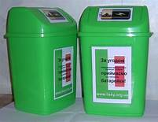

Соціальний експеремент
Опис експеременту
Ми з нашою командою вирішили зробити експеримент,за скільки часу громадяни нашого міста заповнять контейнер для батарейок. Даний соціологічний експеримент був направлений на перевірку екологічної свідомості громадян жителів міста Івано-Франківськ. В рамках даного експерименту, було показано соціальну активність, бажання жителів міста приймати участь в подіях, які направлені на збереження екології планети Земля. Результат нас приємно здивував.
Фото до
Фото після

Висновок експеременту
Провівши соціальний експеримент, ми виявили високий рівень соціальної відповідальності, оскільки за період в один місяць проявили активність близько 200 жителів міста. Після експерименту батарейки були здані і перероблені.